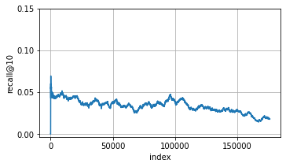

Incremental Stochastic Gradient Descent¶
Model¶
class ISGD:
def __init__(self, n_user, n_item, k, l2_reg=0.01, learn_rate=0.05):
self.k = k
self.l2_reg = l2_reg
self.learn_rate = learn_rate
self.known_users = np.array([])
self.known_items = np.array([])
self.n_user = n_user
self.n_item = n_item
self.A = np.random.normal(0., 0.1, (n_user, self.k))
self.B = np.random.normal(0., 0.1, (n_item, self.k))
def update(self, u_index, i_index):
if u_index not in self.known_users: self.known_users = np.append(self.known_users, u_index)
u_vec = self.A[u_index]
if i_index not in self.known_items: self.known_items = np.append(self.known_items, i_index)
i_vec = self.B[i_index]
err = 1. - np.inner(u_vec, i_vec)
self.A[u_index] = u_vec + self.learn_rate * (err * i_vec - self.l2_reg * u_vec)
self.B[i_index] = i_vec + self.learn_rate * (err * u_vec - self.l2_reg * i_vec)
def recommend(self, u_index, N, history_vec):
"""
Recommend Top-N items for the user u
"""
if u_index not in self.known_users: raise ValueError('Error: the user is not known.')
recos = []
scores = np.abs(1. - np.dot(np.array([self.A[u_index]]), self.B.T)).reshape(self.B.shape[0])
cnt = 0
for i_index in np.argsort(scores):
if history_vec[i_index] == 1: continue
recos.append(i_index)
cnt += 1
if cnt == N: break
return recos
Dataset¶
!wget -q --show-progress http://files.grouplens.org/datasets/movielens/ml-1m.zip
!unzip ml-1m.zip
ml-1m.zip 100%[===================>] 5.64M 4.15MB/s in 1.4s
Archive: ml-1m.zip
creating: ml-1m/
inflating: ml-1m/movies.dat
inflating: ml-1m/ratings.dat
inflating: ml-1m/README
inflating: ml-1m/users.dat
ratings = []
with open('ml-1m/ratings.dat') as f:
lines = list(map(lambda l: list(map(int, l.rstrip().split('::'))), f.readlines()))
for l in lines:
# Since we consider positive-only feedback setting, ratings < 5 will be excluded.
if l[2] == 5: ratings.append(l)
ratings = np.asarray(ratings)
ratings.shape
(226310, 4)
sorted by timestamp
ratings = ratings[np.argsort(ratings[:, 3])]
ratings[:10]
array([[ 6040, 593, 5, 956703954],
[ 6040, 2019, 5, 956703977],
[ 6040, 3111, 5, 956704056],
[ 6040, 213, 5, 956704056],
[ 6040, 912, 5, 956704191],
[ 6040, 919, 5, 956704191],
[ 6040, 2503, 5, 956704191],
[ 6040, 527, 5, 956704219],
[ 6040, 1252, 5, 956704257],
[ 6040, 649, 5, 956704257]])
users = set([])
items = set([])
for u, i, r, t in ratings:
users.add(u)
items.add(i)
users = list(users)
items = list(items)
n_user = len(users)
n_item = len(items)
n_user, n_item
(6014, 3232)
Training¶
Simple Moving Average (SMA) with window size n=5000
window_size = 5000 # for SMA
N = 10 # recall@10
history_mat = np.zeros((n_user, n_item))
# initialize
isgd = ISGD(n_user, n_item, k=100)
# to avoid cold-start, train initial 20% samples
n_ratings = ratings.shape[0]
n_train = int(n_ratings * 0.2)
for ri in range(n_train):
u, i, rating, timestamp = ratings[ri]
u_index = users.index(u)
i_index = items.index(i)
isgd.update(u_index, i_index)
history_mat[u_index, i_index] = 1
avgs = []
sma = []
for ri in range(n_train, n_ratings):
u, i, rating, timestamp = ratings[ri]
u_index = users.index(u)
i_index = items.index(i)
# 1.
if u_index in isgd.known_users:
# If u is a known user, use the current model to recommend N items,
recos = isgd.recommend(u_index, N, history_mat[u_index])
# 2. Score the recommendation list given the true observed item i
recall = 1 if (i_index in recos) else 0
sma.append(recall)
n = len(sma)
if n > window_size:
del sma[0]
n -= 1
avgs.append(sum(sma) / float(n))
# 3. update the model with the observed event
isgd.update(u_index, i_index)
history_mat[u_index, i_index] = 1
Evaluation¶
fig, ax = plt.subplots()
ax.plot(range(len(avgs)), avgs)
ax.set_xlabel('index')
ax.set_ylabel('recall@10')
ax.grid(True)
ax.set_xticks([0, 50000, 100000, 150000])
ax.set_yticks([0.00, 0.05, 0.10, 0.15])
fig.set_size_inches((5.5,3))
fig.patch.set_alpha(0.0)
plt.show()
